ChoVersi｜超バーシ ロゴシステム
LOGO SYSTEM v1.0
00. ブランド解釈 ｜ The Meaning of "Ch"
BRAND READING
Ch-Versi
ロゴ "ChoVersi" の 最初の黒石は "Reversi" の O として読み替えられます。
この読み替えにより、ブランド名は Ch + Reversi、つまり「Ch を冠したReversi」として機能します。
Ch の意味：Chain Hyper（超連鎖）
── ChainがReversiを Hyper（超）化する、というコンセプトの英訳。 日本語名「超バーシ」（連鎖が超を生む）と完璧に対応しています。
表記の使い分け：
・製品ロゴ表記 ⇒ ChoVersi（既存ロゴそのまま）
・別表記・URL等 ⇒ Ch-Versi（CHの種明かし的に）
・日本語名 ⇒ 超バーシ
・英語タグライン ⇒ "The Chain Hyper Reversi."
Ch の意味：Chain Hyper（超連鎖）
── ChainがReversiを Hyper（超）化する、というコンセプトの英訳。 日本語名「超バーシ」（連鎖が超を生む）と完璧に対応しています。
表記の使い分け：
・製品ロゴ表記 ⇒ ChoVersi（既存ロゴそのまま）
・別表記・URL等 ⇒ Ch-Versi（CHの種明かし的に）
・日本語名 ⇒ 超バーシ
・英語タグライン ⇒ "The Chain Hyper Reversi."
01. メインロゴ ｜ Primary
力強さ・存在感のあるダーク版。タイトル画面・印刷物・広告に。
02. ソフト版 ｜ Secondary

静謐・上品な薄色版。プレイ中の盤面ウォーターマーク・サブブランディングに。
特にハニーゴールド背景（#D4B36A）に適合。
03. 使い分けガイドライン
PRIMARY ｜ logo.png
ダーク版
・タイトル画面のメインビジュアル
・ヘッダー・フッター
・名刺・印刷物・グッズ
・SNSアイコン
・ファビコン（要書き出し）
背景：cream / beige のみ
・ヘッダー・フッター
・名刺・印刷物・グッズ
・SNSアイコン
・ファビコン（要書き出し）
背景：cream / beige のみ
SECONDARY ｜ logo-soft.png
ソフト版
・対戦中の盤面ウォーターマーク
・トップ画面の控えめな装飾
・スプラッシュ画面の背景演出
・サブブランディング・派生グラフィック
背景：sage / beige
・トップ画面の控えめな装飾
・スプラッシュ画面の背景演出
・サブブランディング・派生グラフィック
背景：sage / beige
04. サイズバリエーション
360px ｜ メイン
200px ｜ ヘッダー
96px ｜ 名刺
48px ｜ ファビコン
05. 背景色テスト
cream / beige 上 = Primary、sage / dark 上 = Secondary（ソフト版）
04. タイポグラフィ仕様
ALPHABET
Manrope
ChoVersi
ロゴ・見出し・英文に使用。Google Fonts無料配布。
Light(300) / Medium(500) / SemiBold(600) を主に使用
Light(300) / Medium(500) / SemiBold(600) を主に使用
JAPANESE
Noto Sans JP
超バーシ
日本語見出し・本文に使用。Google Fonts無料配布。
Light(300) / Regular(400) / Medium(500) を主に使用
Light(300) / Regular(400) / Medium(500) を主に使用
05. ロゴカラー
Dark Stone
#3A3530
Light Stone
#F2EBE0
Cream Deep
#E8DCC4
Sage Board
#D4B36A